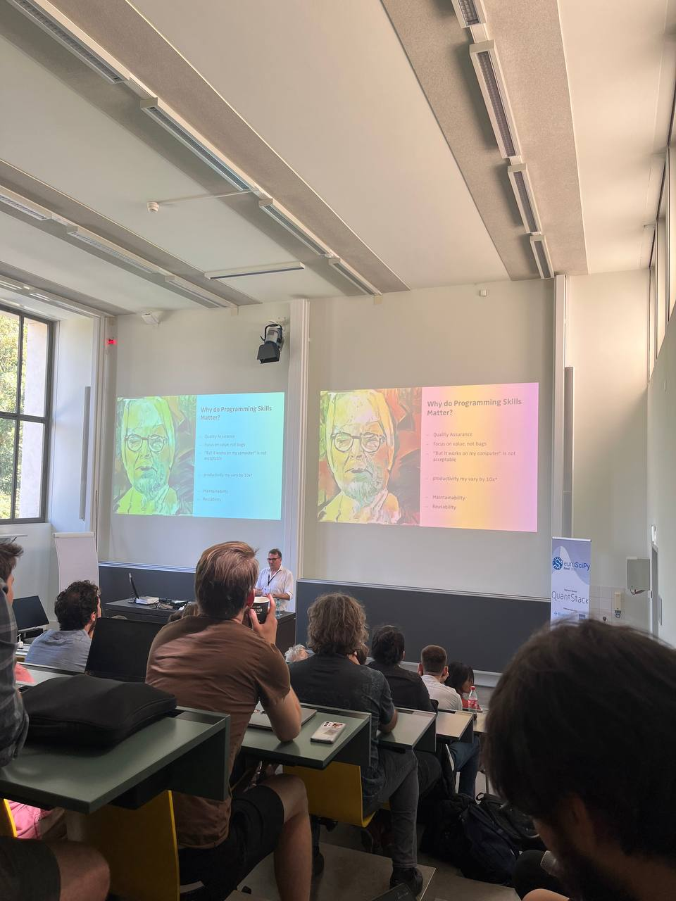
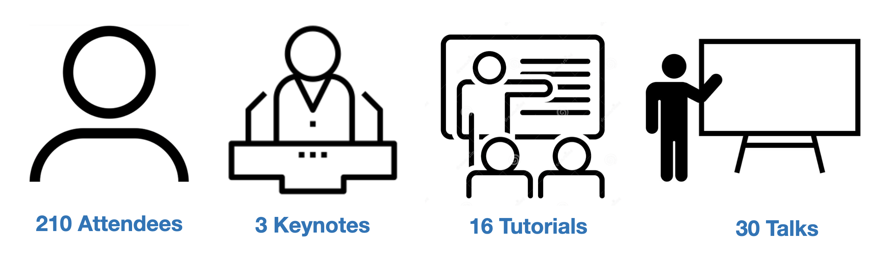
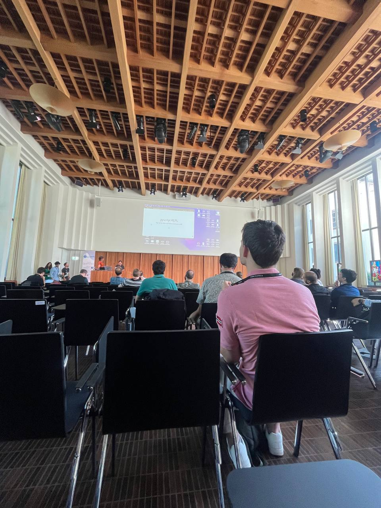
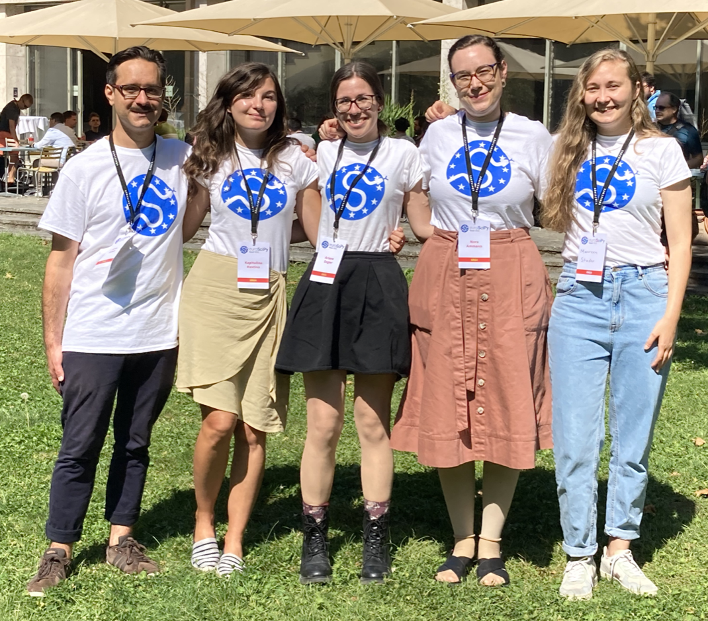
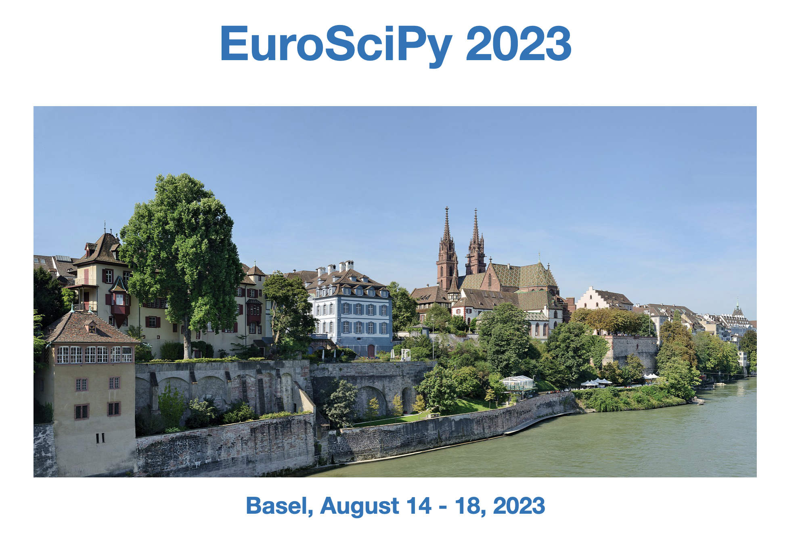

This was EuroSciPy 2022 in Basel
A Successful Conference
EuroSciPy 2022 was a great success. After a two-year break, it resumed its yearly schedule. Even though the decision to have an in-person event could be made only very late, leading to very tight deadlines, the conference was well-attended. Many high-quality talks and tutorials by members of the European scientific Python community made up the core of this event.

EuroSciPy 2022 in Numbers
We counted 210 attendees including people joining via 17 streaming access. Three exciting keynotes started the conference days. Beginners and advanced users learned in new topics in 16 tutorials. The latest research topics were presented in 30 talks.

Poster Session
Talk slots are limited. But EuroSciPy 2022 offered a poster session. The poster session gave presenters the opportunity to explain their projects and software packages. Very lively discussions provided a great opportunity to learn more about cutting-edge Python projects.

Sprints
The last conference days was dedicated to sprints. These projects gatherer core developers and newbies in sprints:
- Bokeh
- NetworkX
- Pandas - GeoPandas
- Scikit-learn
- The Mission Support System
Sprints are a great opportunity for developer teams that work remotely for most of the time to meet in person. There are also good way to onboard new team members.
Sponsors
EuroSciPy is a volunteer-run conference. Financially, the conference targets a balanced budget without profits. Ticket prices are kept as low as possible, especially for participants who otherwise wouldn’t be able to join. Furthermore, the conference offers financial aid waiving ticket fees and providing travel grants.
To achieve this, contributions of sponsors are essentiell. The following company and institutions supported EuroSciPy 2022. For more details see the Sponsors page.
Diamond Sponsor

Platinum Sponsors


Gold Sponsors


Financial Aid Sponsors


Institutional Sponsors


Media Partners

We raffled out a bunch of good Python books. A big thanks to Packt for providing them.
Volunteers
Volunteers are essential for this conference. They make up the core of the on-site team that is so important for a smooth event. Therefore, a big thanks to the volunteers who diligently worked long hours on the conference days. We wouldn’t hav a conference without you.

Next Edition
The 15th European Conference on Python in Science will be Basel again. Reserve the week August 14 to 18, 2023 for this event. Basel is a great city.
